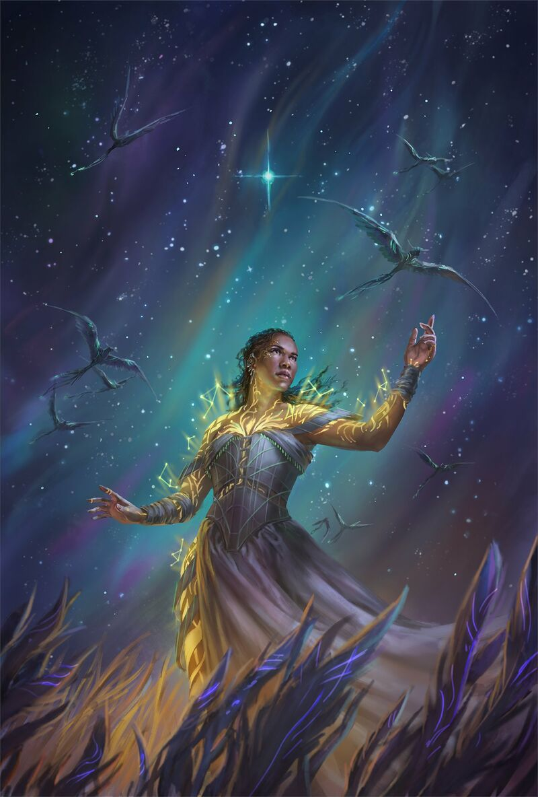

TALDAIN
A unique planet split in two halves by a tidally locked orbit. One side, known as Dayside, is bathed in perpetual sunlight and dominated by desert landscapes, while the other, Darkside, remains in eternal night, lit only by its own natural bioluminescence and celestial glow. This unique planetary structure shapes every aspect of life on Taldain, from its climate and culture to its magic and technology.
The Dayside is arid and sun-scorched, inhabited by people who have adapted to the harsh environment and rely heavily on sand manipulation and solar energy. In contrast, the Darkside fosters a cooler, more temperate climate and supports societies with distinct customs and a different relationship to its magic.

TALDAIN SYSTEM
The Taldain system is the planetary system that contains Taldain. It is a binary system consisting of one large star and a secondary smaller star. The smaller, a relatively dim white dwarf, is surrounded by a dense cloud of particles known as the Particulate Ring. The larger, a blue-white supergiant, plays an important role in the means by which Taldain is powered by its magic.


INHABITANTS
Cultures and people are distinct, divided according to their landscape. On Dayside, the people have developed a desert-based culture centered around survival, trade, and the manipulation of white sand. These societies tend to be organized, resilient, and shaped by long-standing traditions and a deep connection to the sunlit terrain. The ruling class, known as the Dynasts, holds power through a blend of politics and control over sand mastery.
On Darkside, the inhabitants live in more temperate conditions and have developed different customs, technologies, and uses of Investiture. While less is known about Darkside’s cultures, they are portrayed as more technologically advanced in some areas, with a rich and mysterious heritage.
SAND MASTERY
Taldain’s magic system is known as sand mastery, and it is unique to the planet's sunlit half, Dayside. It relies on a special form of magic stored in white sand, a naturally occurring substance that appears inert until exposed to sunlight. Once charged, skilled users called sand masters can manipulate the sand to perform feats like creating tendrils, moving objects, or launching attacks.
Sand mastery requires both physical discipline and a strong connection to magic. Not everyone can become a sand master; the ability is rare and can diminish with overuse or strain. The system is deeply tied to the environment and celestial conditions of Dayside.